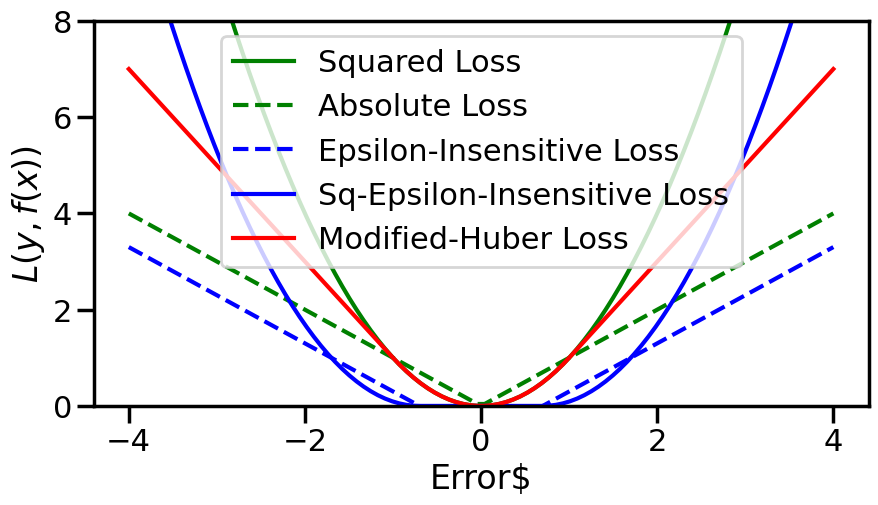
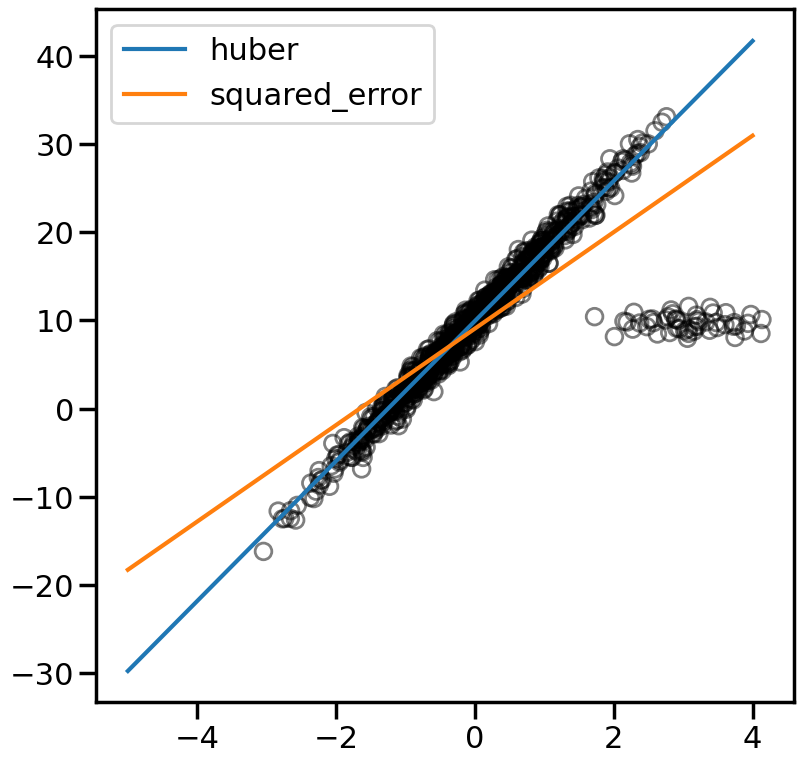
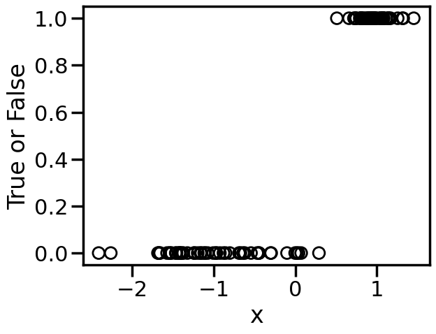
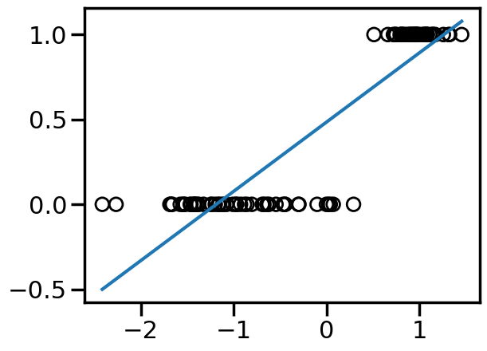
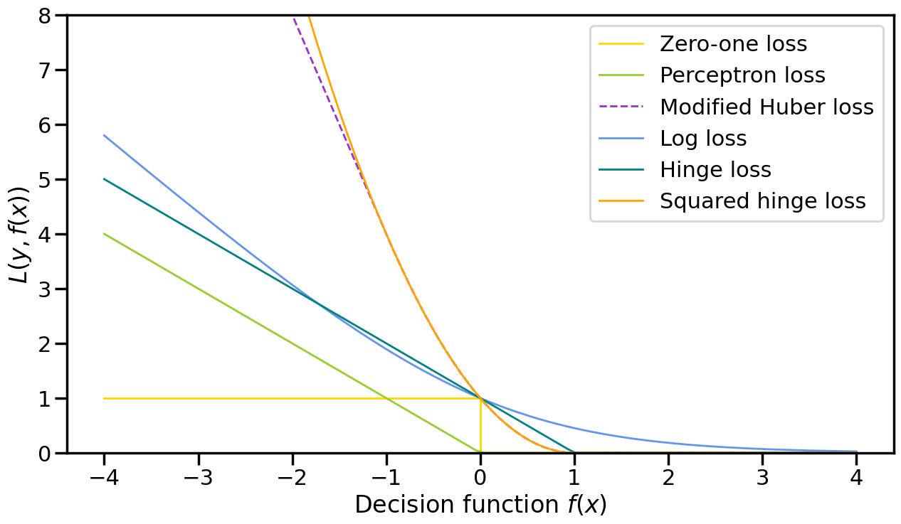
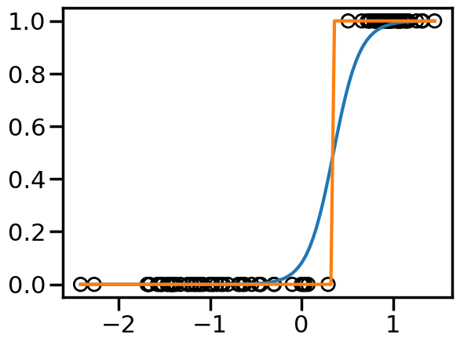
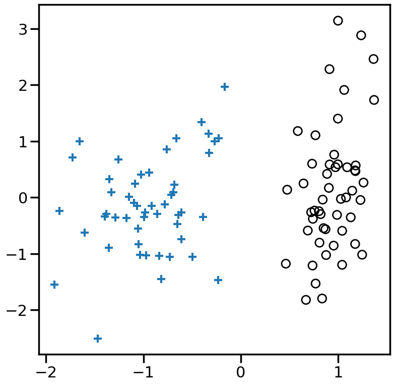
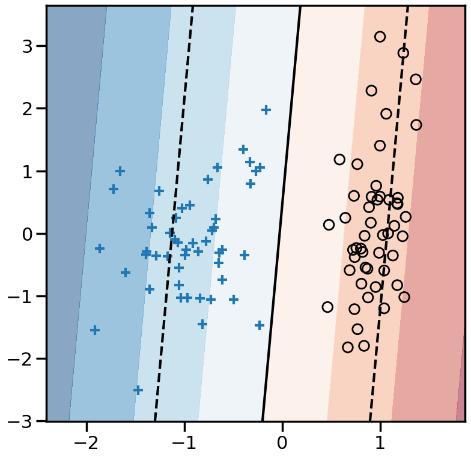

Code
%matplotlib inline
import numpy as np
import matplotlib.pyplot as plt
from sklearn.preprocessing import StandardScaler
from sklearn.linear_model import SGDRegressor
import seaborn as sns
sns.set_context('poster')Summary: This section contains examples of different types of loss functions that can be used in either a regression or classification setting. It helps you understand some of the difference between the loss functions and how these differences give rise to different behavior on the part of a trained model (in this case a linear model).
Thus far we have been discussing Linear Models in their most familiar context — minimizing the Mean Squared Error (MSE) with respect to the training data, optionally with an L2 regularization on the weight vector:
\[ \mathcal{L}(\mathbf{w}) = \frac{1}{N} \sum_{i=1}^N (y_i - \mathbf{w}^T \mathbf{x}_i)^2 + \alpha ||\mathbf{w}||_2^2 \]
For now, let us ignore the regularization term, and just focus on the Loss term. Why should we minimize the squared error?1 Why not the absolute error or other possible loss functions? Let’s explore a few of those options and then see, in practice, how they affect the learned linear model.
1 It turns out that there are good theoretical reasons for this, for example, that a Linear Model trained via an L2/MSE Loss is the Best Linear Unbiased Estimate (BLUE) of the Linear Model, according to the Gauss-Markov Theorem, but, as we will see, there are other reasons to forgo these advantages.
%matplotlib inline
import numpy as np
import matplotlib.pyplot as plt
from sklearn.preprocessing import StandardScaler
from sklearn.linear_model import SGDRegressor
import seaborn as sns
sns.set_context('poster')import numpy as np
import matplotlib.pyplot as plt
from sklearn.metrics import zero_one_loss
def modified_huber_loss(y):
if(abs(y)<1):
return y**2
else:
return 2*abs(y)-1
mhuber = np.vectorize(modified_huber_loss)
eps = 0.7
def sq_esp_insensitive(y):
if(abs(y)<eps):
return 0
else:
return (abs(y)-eps)**2
sq_eps_ins = np.vectorize(sq_esp_insensitive)xmin, xmax = -4, 4
xx = np.linspace(xmin, xmax, 100)
plt.figure(figsize=(10,5))
plt.plot(xx, xx**2, 'g-',
label="Squared Loss")
plt.plot(xx, abs(xx), 'g--',
label="Absolute Loss")
plt.plot(xx, abs(xx)-eps, 'b--',
label="Epsilon-Insensitive Loss")
plt.plot(xx, sq_eps_ins(xx), 'b-',
label="Sq-Epsilon-Insensitive Loss")
plt.plot(xx, mhuber(xx), 'r-',
label="Modified-Huber Loss")
plt.ylim((0, 8))
plt.legend(loc="upper center")
plt.xlabel("Error$")
plt.ylabel("$L(y, f(x))$")
plt.show()
# Check out Outliers
from sklearn.datasets import make_regression
n_samples = 1000
n_outliers = 50
Xr, yr, coef = make_regression(n_samples=n_samples, n_features=1,
n_informative=1, noise=10,
coef=True, random_state=0)
# Add outlier data
np.random.seed(0)
Xr[:n_outliers] = 3 + 0.5 * np.random.normal(size=(n_outliers, 1))
yr[:n_outliers] = -3 + 10 * np.random.normal(size=n_outliers)
yr/=10
yr += 10
line_X = np.arange(-5, 5)
figure = plt.figure(figsize=(9, 9))
plt.scatter(Xr, yr,facecolors='None',edgecolors='k',alpha=0.5)
# Loss Options: huber, squared_error, epsilon_insensitive, squared_epsilon_insensitive
losses = ['huber', 'squared_error']
for loss in losses:
model = SGDRegressor(loss=loss, fit_intercept=True, max_iter = 2000,
penalty='l2', alpha=.001, epsilon=1, tol=1e-3)
model.fit(Xr, yr)
# Predict data of estimated models
line_y = model.predict(line_X[:, np.newaxis])
plt.plot(line_X, line_y, '-', label=loss,alpha=1)
plt.axis('tight')
plt.legend(loc='best')
plt.show()
from sklearn.datasets import make_classification
X, y = make_classification(n_features=1, n_redundant=0,
n_informative=1,
random_state=1,
n_clusters_per_class=1,
flip_y=0.0, class_sep=1)
plt.figure()
plt.xlabel('x')
plt.ylabel('True or False')
plt.scatter(X,y,marker='o',facecolors='none',edgecolors='k')
plt.show()
model = SGDRegressor(loss='squared_error', fit_intercept=True, max_iter = 2000,
penalty='l2', alpha=.001, epsilon=1, tol=1e-3)
model.fit(X, y)
Xp = np.linspace(X.min(),X.max(),100)
Xp = Xp[:, np.newaxis]
plt.figure()
plt.scatter(X,y,marker='o',facecolors='none',edgecolors='k')
plt.plot(Xp,model.predict(Xp))
plt.show()
For many linear classification problems, we can use a decision function: \[ y_i\cdot(w\cdot x_i) \] where \(y_i = \pm 1\) such that if \(y_i\) and \(w\cdot x_i\) point have similar signs, then the decision function is positive, otherwise it is negative.
# From: http://scikit-learn.org/stable/auto_examples/linear_model/plot_sgd_loss_functions.html
def modified_huber_loss(y_true, y_pred):
z = y_pred * y_true
loss = -4 * z
loss[z >= -1] = (1 - z[z >= -1]) ** 2
loss[z >= 1.] = 0
return loss
xmin, xmax = -4, 4
xx = np.linspace(xmin, xmax, 100)
lw = 2
fig = plt.figure(figsize=(15,8))
plt.plot([xmin, 0, 0, xmax], [1, 1, 0, 0], color='gold', lw=lw,
label="Zero-one loss")
plt.plot(xx, -np.minimum(xx, 0), color='yellowgreen', lw=lw,
label="Perceptron loss")
plt.plot(xx, modified_huber_loss(xx, 1), color='darkorchid', lw=lw,
linestyle='--', label="Modified Huber loss")
plt.plot(xx, np.log2(1 + np.exp(-xx)), color='cornflowerblue', lw=lw,
label="Log loss")
plt.plot(xx, np.where(xx < 1, 1 - xx, 0), color='teal', lw=lw,
label="Hinge loss")
plt.plot(xx, np.where(xx < 1, 1 - xx, 0) ** 2, color='orange', lw=lw,
label="Squared hinge loss")
plt.ylim((0, 8))
plt.legend(loc="upper right")
plt.xlabel(r"Decision function $f(x)$")
plt.ylabel("$L(y, f(x))$")
plt.show()
from sklearn.linear_model import SGDClassifier
#loss = 'squared_error'
loss = 'log_loss'
#loss = 'hinge'
model = SGDClassifier(loss=loss, fit_intercept=True, max_iter = 2000,
penalty='l2', alpha=.001, epsilon=1, tol=1e-3)
model.fit(X, y)
Xp = np.linspace(X.min(),X.max(),100)
Xp = Xp[:, np.newaxis]
plt.figure()
plt.scatter(X,y,marker='o',facecolors='none',edgecolors='k')
try:
plt.plot(Xp,model.predict_proba(Xp)[:,1],label='probability')
except:
pass
plt.plot(Xp,model.predict(Xp))
plt.show()
from sklearn.preprocessing import StandardScaler
from sklearn.datasets import make_moons, make_circles, make_classification
X, y = make_classification(n_features=2, n_redundant=0,
n_informative=2,
random_state=1,
n_clusters_per_class=1,
flip_y=0.0, class_sep=0.7)
#rng = np.random.RandomState(2)
#X += 2 * rng.uniform(size=X.shape)
linearly_separable = (X, y)
datasets = [make_moons(noise=0.3, random_state=0),
make_circles(noise=0.2, factor=0.5, random_state=1),
linearly_separable
]
# Change: try 0,1, or 2
ds = datasets[2]
X, y = ds
X = StandardScaler().fit_transform(X)
plt.figure(figsize=(9, 9))
plt.scatter(X[y==1,0],X[y==1,1],marker='+')
plt.scatter(X[y==0,0],X[y==0,1],marker='o',facecolors='none',edgecolors='k')
plt.show()
from sklearn.svm import LinearSVC
# Try modifying these:
#====================
loss = 'squared_error'
#loss = 'perceptron'
#loss = 'log_loss'
#loss = 'hinge'
#loss = 'modified_huber'
#loss = 'squared_hinge'
# Also try the effect of Alpha:
# e.g., between ranges 1e-20 and 1e0
#=============================
alpha=1e-3
# You can also try other models by commenting out the below:
model = SGDClassifier(loss=loss, fit_intercept=True,
max_iter=200,tol=1e-5, n_iter_no_change =100,
penalty='l2',alpha=alpha)
#model = SGDClassifier(loss = 'hinge')
#model = LinearSVC(loss='hinge',C=1e3)
model.fit(X, y)
plt.figure(figsize=(9, 9))
h=0.01
x_min, x_max = X[:, 0].min() - .5, X[:, 0].max() + .5
y_min, y_max = X[:, 1].min() - .5, X[:, 1].max() + .5
xx, yy = np.meshgrid(np.arange(x_min, x_max, h),
np.arange(y_min, y_max, h))
# Plot the decision boundary. For that, we will assign a color to each
# point in the mesh [x_min, x_max]x[y_min, y_max].
if hasattr(model, "decision_function"):
Z = model.decision_function(np.c_[xx.ravel(), yy.ravel()])
else:
Z = model.predict_proba(np.c_[xx.ravel(), yy.ravel()])[:, 1]
Z = Z.reshape(xx.shape)
vmax = max(abs(Z.min()),abs(Z.max()))
cm = plt.cm.RdBu
plt.contourf(xx, yy, Z, cmap=cm, alpha=.5, vmax = vmax, vmin = -vmax)
levels = [-1.0, 0.0, 1.0]
linestyles = ['dashed', 'solid', 'dashed']
colors = 'k'
plt.contour(xx, yy, Z, levels, colors=colors, linestyles=linestyles)
plt.scatter(X[y==1,0],X[y==1,1],marker='+')
plt.scatter(X[y==0,0],X[y==0,1],marker='o',facecolors='none',edgecolors='k')
plt.show()c:\Users\mafuge\Box Sync\ETHZ\teaching\ML4ME\ML4ME_Textbook\.conda\Lib\site-packages\sklearn\linear_model\_stochastic_gradient.py:738: ConvergenceWarning: Maximum number of iteration reached before convergence. Consider increasing max_iter to improve the fit.
warnings.warn(